With this assignment, we were tasked with creating a tutorial for various data visualization topics. The goal of this tutorial is to illustrate how to create a basic PowerBI dashboard.
To begin, you will need to download the PowerBI desktop client, and the example dataset used for this tutorial. Personally, on my home computer I had issues with the installer found via Microsoft's website, but was able to install PowerBI Desktop using the Microsoft Store app. For the purposes of this tutorial, I'd recommend installing PowerBI the same way,
in case there are differences between the two versions.
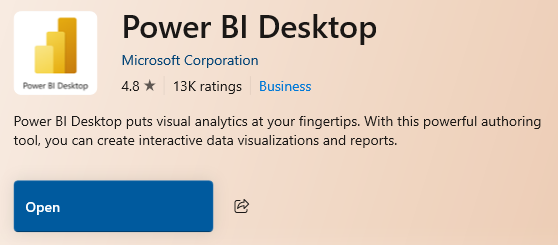
While this is installing, please download the dataset 'Energy Use by Person. The dataset can be found at Our World in Data, please download the full dataset using the link here. Be sure to extract the .csv from the zip into an appropriate location.
Once PowerBI has been setup, and the dataset downloaded, open the application. Select 'Blank Report', then when presented with options for various data sources, select 'Get Data From Another Source'. Select Text/CSV, then open the dataset you just downloaded. There is no need to customize the settings for opening the file, just load the file directly into PowerBI.
Once the main report view has loaded, you can look to the toolbar on the lefthand side of the screen. Click the 2nd button to view the data you loaded. Please observe that in this data, there are both rows for individual countries, as well as a few aggregates for different regions (continents, worldwide) and income levels. We will need to clean this data momentarily.
Once you're acclimated with the table view, click the 1st button to navigate back to the report view.
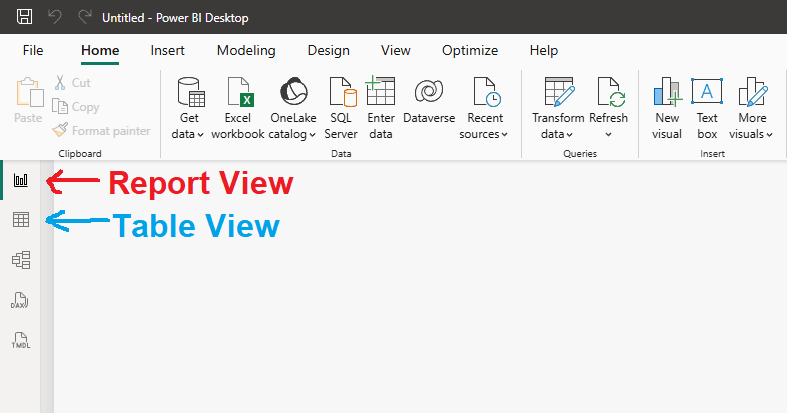
In the ribbon bar at the top of the screen, navigate to Transform Data > Transform Data. This will open a new window where you can examine/filter the data.
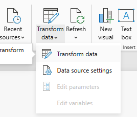
Reviewing the data, we can observe that all aggregated entities we want to exclude conveniently start with 'OWID' in their code. To filter these values out of the dataset, click the v button next to 'Code' in the header row, then 'Text Filters', then 'Does Not Begin With'. Enter the text 'OWID' in the appropriate box, then press OK to apply the filter.
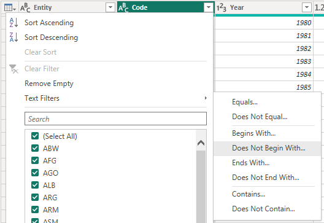
You can confirm the filter is applied by seeing the filter symbol in the header row next to 'Code'. We can now close the dataset by navigating to the top right > File > Close & Apply.
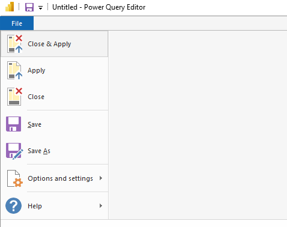
To populate the dashboard, we can select visualizations from the menu on the right hand side of the screen. We can start with a basic bar chart, select the first button in the list to create the object.
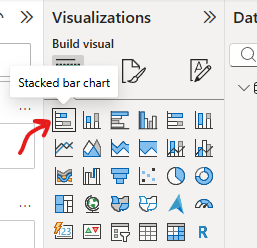
To create a basic visualization, drag columns from the list on the righthand side of your screen into the appropriate locations for the graph. For this example, drag 'Entity' (The country name) to the y-axis, and 'Total energy suuply' to the x-axis. This will populate a basic bar chart for energy supply x country since the data started being collected.
We will add a filter to target specific years shortly.
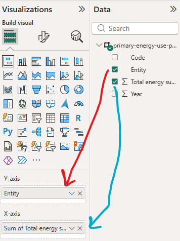
Click anywhere in your report view outside of the chart to 'click off' of it, so you can add another visualization. For the next visualization, we'll add a map. Select 'Filled Map' from the visualization list to add another viz to your dashboard. During this step, I received an error that maps were disabled until a security setting was enabled, if you receive
this as well you can resolve the issue by navigating to File > Options and Settings > Options > Security > Enable 'Use Map and Filled Map Visuals'.
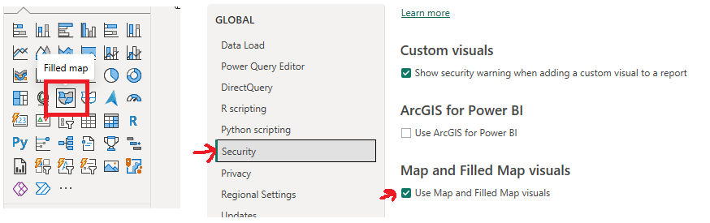
To populate the map, drag 'Code' (Country Code) to the location field. Drag 'Total Energy Supply' to the tooltip field to enable the ability to hover countries and see the numeric value for total energy use.
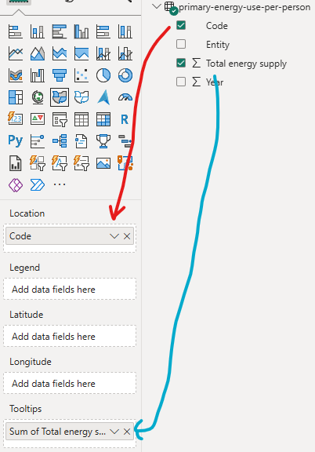
The map should largely appear as a bunch of blue countries, we need to select a color gradient to illustrate the differences in energy x country. Click the map to ensure it's 'active', then on the lefthand toolbar, select the visual formatting button. Under Visual > Fill Colors > Colors, select the 'fX' button.
Switch the Format Style to gradient, then switch the field to be based on total energy supply. Adjust the gradient colors to two colors of your preference, then press OK to save your selection.
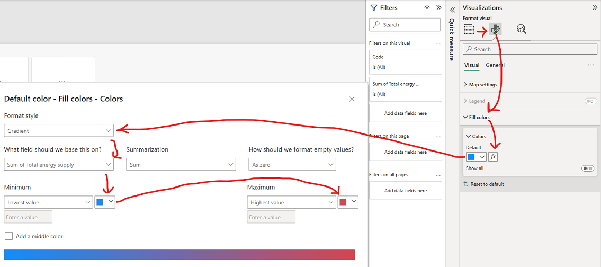
Click out of all visualizations, then click the line chart visualization to add one more graph. Populate it by dragging year to the x-axis, total energy to the y-axis (Changing the aggregate to average instead of sum), and entity to the legend. It will look like spaghetti, but we will add filters in the next step.
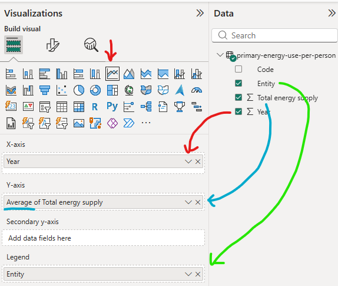
Leave some open space for filter buttons to be added, but move/resize your data visualizations to your liking. As a check-in example, mine currently looks like this
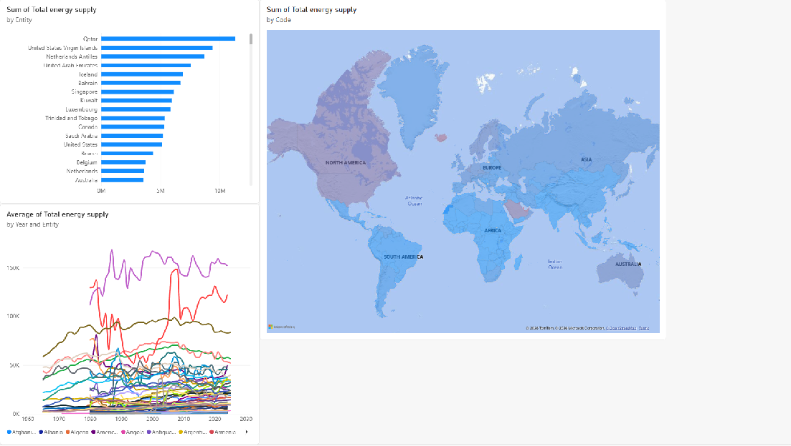
We will now add some slicers that will apply filters to all the elements we've created. Start by adding a normal slicer from the visualization menu. Drag 'Year' into the field to automatically create a filter which will display all energy use between a start and end year.
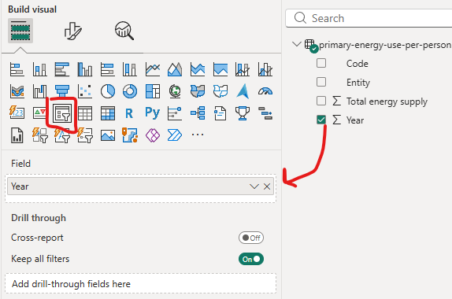
Then, create a button slicer, dragging 'Entity' to the value field to create some buttons you can select to filter countries. You can Ctrl+Click to select multiple countries, populating the other visualizations with your selection.
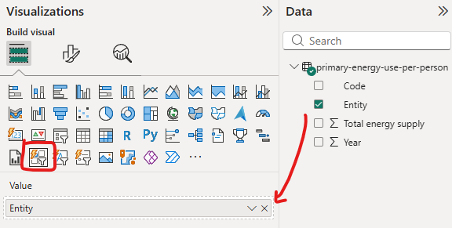
Finally, rearrange your elements to your liking. Personally, on the button slicer I navigated to visual settings > multi-button layout to allow for more rows/columns on my screen. I also switched the aggregate on the bar graph to average use x country, rather than a sum, but this was just personal preference while playing around. My final dashboard looks like this:
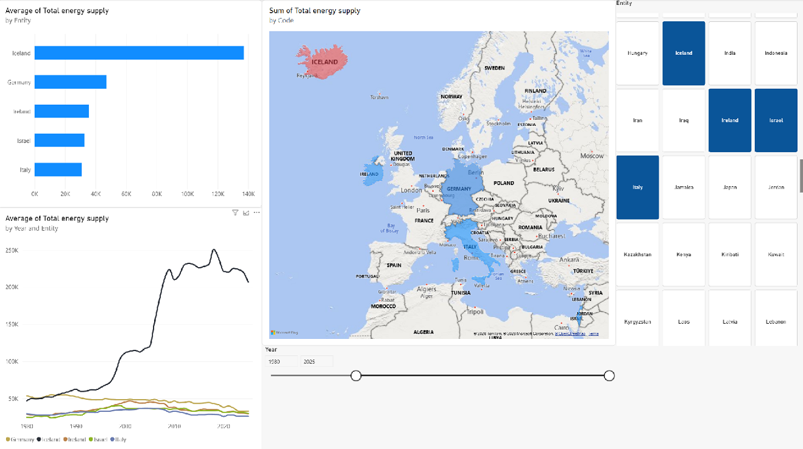
At this point, the tutorial is effectively complete, and you should hopefully know how to do some basic data clean-up and visualization building with PowerBI. There isn't a great method I'm aware of for publishing your dashboard publicly (unlike other tools like Tableau that have the free/public option), but you can save dashboards for local use.